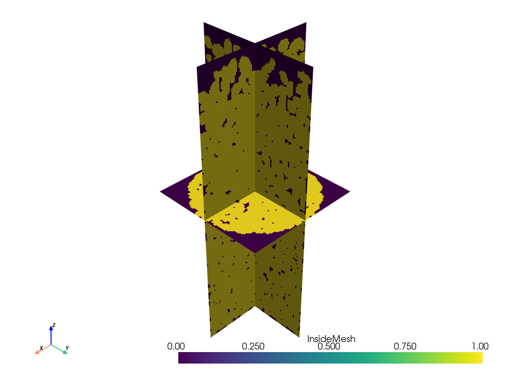
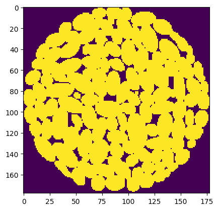
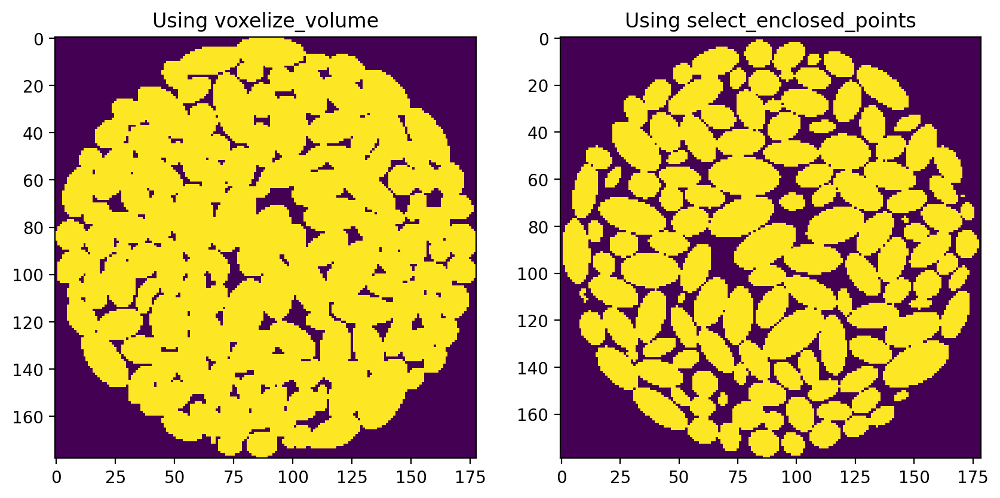

Tips and Tricks: Converting STL files to voxel images
STL files are a common way to represent 3D volumes. They are used by 3D printers and CFD models, among others. I was recently handed a batch of STL files by someone that had generated packings of randomly packed particles. They used physics-based simulations to determine where the particles would settle under the influence of gravity, providing realistic geometries for doing flow simulations. I spent a bit of time trying to find a simple way to convert these files to the basic voxelized representation that we require for most of our analysis, like extracting networks for use in OpenPNM, or simulating non-wetting fluid invasion.
The solution I found was pretty simple, but I had to piece together several bits of information from different tutorials, so I thought I’d collect it here.
At first I discovered the numpy-stl which allowed me to read the files successfully and plot something, but it didn’t seem to offer the tools I needed to convert the data to a voxel image. After some internet searching I (re)discovered pyvista, which I don’t regularly use, but this is not the first time it has come to rescue so perhaps I should dig into this package deeper in the near future.
Anyway, PyVista offers a lot of tools for converting spatial data between formats. In fact, the challenge was to determine which of the many tools was best suited to do the job. It was also a bit of a trick to understand the relationship between “point” and “cell” data, which I’ll explain below.
Using PyVista to read STL files.
The first step was easy. PyVista has a top-level function for reading STL files, not surprizingly called read(). This function reads the file and creates a mesh object. Conveniently, the mesh object has a plot method for quick confirmation that things worked:
import pyvista as pv
import numpy as np
mesh = pv.read('file.stl)
mesh.plot()
Voxelizing the Mesh
Now comes the hard part. We are trying to create a voxel image, in the form of a 3D Numpy ndarray, where each voxel contains a boolean value indicating whether it lies in the void phase or not. This means that we need to decide if a given point in space lies within the mesh or not, then assign the corresponding boolean value to the corresponding voxel in the ndarray. In terms of the above image, this means determining whether a point lies inside one of the ellipses or not. To do this we first need to define the “points” that will become the voxels in the final image. Then we want to ask PyVista to compute whether each point lies inside the mesh or not. There are two ways to do this.
Using voxelize_volume
The simplest way is to use the appropriately named voxelize_volume function. This requires that we pass in the mesh and also specify the density of the voxelization. The density controls to the number of points that we wish to have in the final image. A lower density means more points, which seems a bit counterintuitive actually. Consider that image resolution is usually given as as a voxel size expressed as \(m/voxel\), but could just as easily be given as \(m^3/voxel\), which would mean that a smaller number corresponds to higher resolution or more points for a given image. The units of “density” in my experience are usually as “some value per unit volume”, so if we wanted to express image resolution as a density it should be \(voxels/m^3\), in which case a higher value would result in more points. In fact, the reason a lower density gives more points is because this value is actually used as a step-size in Numpy’s arange function, like np.arange(start, step, density); hence a smaller value of density means more points are generated. Nonetheless, the function is super helpful so I’ll let this issue slide and thank the author(s) for their work. Anyway, this function is used as follows:
vox = pv.voxelize_volume(mesh, density=0.05)vox is not actually a voxel image (yet). It’s a new mesh object where the triangulated surfaces visible in the original rendering have been replaced with cubic elements. Note that this process is quite slow. It took over an hour on my (admittedly antiquated) workstation to generate a voxel image of size ~400-cubed. Luckily, this process only needs to be done once for each mesh, so waiting overnight for a batch to run is not really too painful.
The voxelized mesh can be visualized easily as well:
slices = vox.slice_orthogonal()
slices.plot(scalars='InsideMesh')Which yields the following, where the voxelized nature of the surfaces can seen:

The final step is converting this vox mesh object into a Numpy array. The voxelization process not only generates a cubic mesh, but it also determine which voxel represents solid or not. This information is stored on the vox dictionary object under the key 'InsideMesh', as a vector containing 1 for voxels inside the ellipsoids, and 0 outside. Converting this vector into a cubic image was the last hurdle. I needed to reshape it from a linear vector into 3D array, but first I needed to determine what shape to use.
Although the the 'InsideMesh' array contains one value for each voxel, the vox mesh itself has coordinates for the corners of each voxel. One can thus determine the number of cells by looking at the number of number of corners defined in the mesh (i.e. looking at the shape of vox.x, vox.y or vox.z), then subtracting 1 from each axis, to not count the extra layer of points at the end of each axis. Also, I learned that it is necessary to specify the Fortran ordering of the data using the order='F' option when reshaping:
im = np.reshape(
vox['InsideMesh'],
np.array(vox.meshgrid[0].shape)-1,
order='F',
)The result is a standard voxel image in the form of a Numpy ndarray, perfectly suited for simulations.

Given how long the voxelize_volume() function requires, it is probably a good idea to save the array for future use:
np.save('stl_as_ndarray', im)Using select_enclosed_points
Although the above method worked great for me, the slowness inspired me to investigate whether an alternative approach might be faster. A bit more searching led to the following solution, suggested by Github user @dveni:
def stl_to_array(mesh: pv.PolyData, density: float):
x_min, x_max, y_min, y_max, z_min, z_max = mesh.bounds
x = np.arange(x_min, x_max, density)
y = np.arange(y_min, y_max, density)
z = np.arange(z_min, z_max, density)
x, y, z = np.meshgrid(x, y, z)
# Create unstructured grid from the structured grid
grid = pv.StructuredGrid(x, y, z)
ugrid = pv.UnstructuredGrid(grid)
# Get part of the mesh within the mesh's bounding surface.
selection = ugrid.select_enclosed_points(
mesh.extract_surface(),
tolerance=0.0,
check_surface=False,
)
mask = selection['SelectedPoints'].view(bool)
1 mask = mask.reshape(x.shape, order='F')
mask = np.array(mask)
return mask- 1
-
Note that the here
xis coming frommeshgrid, but it was used to compute the cell centers so there is no need to subtract 1, unlike themeshgridattribute of thevoxmesh returned byvoxelize_volumewhich defines the cell corners.
This function is clearly less convenient than just using voxelize_volume, but I thought it might be faster because it uses a different method for finding whether a point is inside the mesh or not. Specifically it uses the select_enclosed_points() method of the UnstructuredGrid class. I was hoping that this might be faster since it searches for points without also creating a voxelized mesh object. I did an informal comparison of both methods and found them to require about equal times, so I will probably use the voxelize_volume() function in future since it’s easier to remember, and it is probably helpful to have the mesh object handy for future use.
Comparing the Outputs of the Two Methods
I did notice however, that the two methods produce a different result. The voxelize_volume() function seems to produce an image with more solid voxels, resulting in a structure that is a over packed:

I am guessing that each of these methods uses a different behavior for identifying voxels laying on the boundary, perhaps it’s the difference between using < instead of a <=.
In any event, the select_enclosed_points method seems preferable since the particles are much better defined. It is possible to dilate the particles to get something similar to the voxelize_volume result, while eroding the particles from voxelize_volume will not give the clear separation of the select_enclosed_points method.
Conclusions
Despite the much cleaner implementation of the voxel_volume method, I think I will be using the select_enclosed_points method since it gives better results. The speed (or lack thereof) of the two methods is about equal, so there is nothing to chose there. The only downside of the select_enclosed_points method is that it does not create a rectilinear mesh object, which may or may not be useful for some uses. Perhaps the stl_to_array function should be added to the io module of PoreSpy, then the ugliness of the implementation will be hidden from sight.